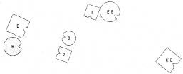
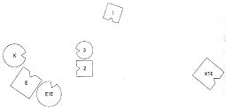
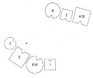
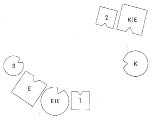

HELLINGER gruba Yanımda oturan kadınla çalışmak istiyorum şimdi. Sizlere kısaca konunun ne olduğunu söyleyecek.
HEIDI Göğüs kanseriyim. İki hafta önce ameliyat oldum, kesin sonucu da ancak o zaman almıştım. Annem de dokuz yıl önce göğüs kanserinden öldü. Güler.
HELLINGER Evli misin?
HEIDI Evliyim, iki çocuğum var. Büyük oğlum başka bir adamdan –dizime herhalde o da katılacak. Güler. Onunla evli değildim. Şimdiki eşim bu çocuğu evlat edindi.
HELLINGER Korkunç.
HEIDI Sonra ondan bir kızım oldu. Eşimin bir çocuğu daha var ama onunla bir ilgim yok. Çocuk önceki bir ilişkisinden.
HELLINGER İlk eşinle neden evlenmedin?
HEIDI İstemedim. Bir çocuğum var artık, bu kadarı yeterli, diye düşündüm ve onun benim için uygun eş olmadığını.
HELLINGER Öyle mi? –Ya şimdiki eşin? O daha önce evli miydi yoksa yalnızca bir ilişkisi mi vardı?
HEIDI Bir ilişkiymiş. Evlenmek istemiş ama çocuğun annesi istememiş.
HELLINGER Çalışmaya güncel sistemle başlıyorum. Önceki eşine –öyle diyelim-, sana, bu ilişkiden olan çocuğuna, şimdiki eşin önceki karısı, ilk çocuğu ve ikinizin ortak çocuğuna ihtiyacımız olacak. Kocanın önceki eşi evlendi mi?
HEIDI Hayır, çocuğunu tek başına büyüttü.
HELLINGER İlk eşin sonradan evlendi mi?
HEIDI Bilmiyorum. Hiçbir ilişkimiz kalmadı. Yaşadığımız bir evlilik de değildi zaten.
HELLINGER Ortada bir çocuk varsa bu, iki insanı bir evlilik gibi bağlar. O zaman da senin yaptığın gibi hareket edilemez. O senin ilk eşindi. Şimdi duruma daha yakından bakacağız. Temsilcileri diz.
1. Resim

K Kadın (=Heidi), 2 ve 3’ün annesi
K1E Kadının ilk eşi
2 İkinci çocuk, oğlan, şimdiki eş tarafından evlat edinilmiş
E Erkek, 1 ve 3’ün babası
3 Üçüncü çocuk, kız
E1E Erkeğin ilk eşi, 1’in annesi
1 İlk çocuk, oğlan
HELLINGER Erkek nasıl?
ERKEK Burada kendimi bir çocuk kulübünde gibi hissediyorum. İlk karım ve ilk çocuğumla hiçbir ilişkim yok.
HELLINGER Kadın nasıl?
KADIN Çocuklar yoluma dikilmiş, beni ilk eşimden ayırıyorlar. Aramızda duruyorlar.
HELLINGER Oğul nasıl?
İKİNCİ ÇOCUK Babama gitmek istiyorum.
HELLINGER Peki burada nasılsın? Ne hissediyorsun?
İKİNCİ ÇOCUK Darlık.
ÜÇÜNCÜ ÇOCUK Anneme çok yakınım. Anne fazlasıyla yakın, babaysa çok uzak.
HELLINGER Böyle bir ailede ilk eşin oğlu yeni ailesinde babasını temsil edecek, annesi ve üvey babasına karşı babasının duygularını taşıyacaktır. Kız da babasının ilk eşini temsil ederek ona ve annesine karşı ilk eşin duygularını hissedecektir. Sarsılmaz bir yasadır bu. Saygı görmeyen eski bir eşin olduğu her yerde bu eş, bir sonraki evlilikte çocuklar tarafından temsil edilir ve takdiri orada arar. –İlk eş nasıl?
ERKEĞİN İLK EŞİ Önceki partneri görmek istiyorum. Diğer erkeğin sırtını bana dönmüş olması beni rahatsız ediyor.
İLK ÇOCUK Ben hiçbir ilişki hissetmiyorum. Nereye ait olduğumu bilemiyorum.
KADININ İLK EŞİ Ben kendimi dışlanmış, aldatılmış, tecrit edilmiş ve öfke dolu hissediyorum.
HELLINGER Bu duyguları oğlu bu ailede temsil edecek. –Şimdi belirli bir düzen oluşturalım.
Hellinger kadını erkeğin soluna, ilk karısını da erkeğin sağına yerleştirir.
2. Resim

HELLINGER büyük oğla Nasılsın? Az önce güldün?
İLK ÇOCUK Kadın ve babamın yanına gidebilmeyi ve onların yanına yerleştirilmeyi beklemiştim. Oraya gitmek istiyorum. Gidebilirsem kendimi bu kadar yalnız hissetmeyeceğim.
HELLINGER Erkeğin ikinci eşi nasıl?
KADIN Ayaklarımın altından yerin çekildiğini hissediyorum. Kendimi rahat, iyi hissetmiyorum.
HELLINGER Erkek nasıl?
ERKEK Kadın bana fazlasıyla yakın.
HELLINGER Kim?
ERKEK O.
Şimdiki eşini göstererek ilk eşine yaklaşır.
HELLINGER İlk bağ onunla kurulmuş.
Hellinger çözüm resmini oluşturur.
3. Resim

HELLINGER Şimdi nasıl?
Kadının şimdiki eşi başıyla onaylar.
KADIN İyi.
İLK ÇOCUK Tamam böyle.
İKİNCİ ÇOCUK Evet, böyle iyi.
ÜÇÜNCÜ ÇOCUK İyi.
KADININ İLK EŞİ Halimden memnunum ama kadının olanı tamir etmesine ihtiyaç duyuyorum. Benim sol tarafımda olmalı.
Kadın güler.
HELLINGER Daha fazla sürdürmek istemiyorum.
HELLINGER Heidi’ye Kendi yerine geçmek ister misin?
HEIDI Bir sessizliğin ardından Burası benim yerim değil. Kızımla kocam neredeler?
HELLINGER Daha iyi bir yer bulup bulamayacağını sınayarak gör. Lütfen. Dizime katılmak ve bunun sen ve diğerleri için nasıl olduğunu görmek durumundasın. Bunu yalnızca aklınla yapamazsın.
4. Resim

HELLINGER İkinci eşi buna ne diyor?
ERKEK Biraz tuhaf. Nereye ait olduğunu bilmesi gerek. Ait olduğu yer burası değil.
HELLINGER Heidi’ye Hepsini kaybetmişsin.
Gruba Varlıklarını hiç dikkate almaksızın nasıl davrandığını görüyor musunuz onlara? İlk ve ikinci eşlerinin ne hissettiğini hiç düşünmüyor. Görünürde erkeklere karşı hiçbir empati yok. Canının istediği gibi hareket edebileceğine inanıyor. Şimdi iki arada bir derede: İşte sonuç.
Heidi’ye Kimi zaman kanser kefarettir. Göğüs kanseri ise, gözlemime göre –bunun da son derece kısıtlı olduğunu belirtmeliyim- bir erkeğe yapılan haksızlığın kefareti bazen.
Gruba İlk eşine ve babası elinden alındığı için oğluna büyük bir haksızlık yapılmış. Hatta oğul evlat edinilmiş. Böylece babası bir kez daha elinden alınmış; yalnızca öteki aileye geçmek zorunda kalmamış, babasının adından bile vazgeçmesi gerekmiş.
Heidi karşı çıkar.
HELLINGER Burada neyin yasal olduğunun benim için hiçbir önemi yok. Oğlun kendisini iyi hissetmesi için babasının adını taşıması gerekiyor.
Gruba Burada gördüğümüz, annelik hakkı, farkında mısınız? Çocuklar söz konusu olduğunda belirleyici olan yalnızca kadınlar.
Heidi’ye Çalışmaya bu noktada son veriyor, etkisini senin üzerinde göstermeye bırakıyorum.